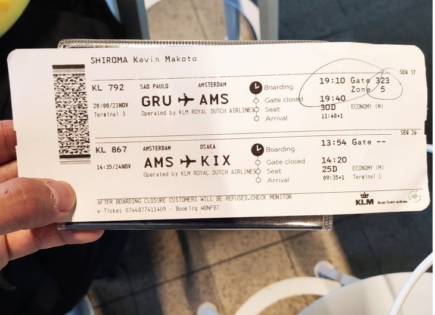
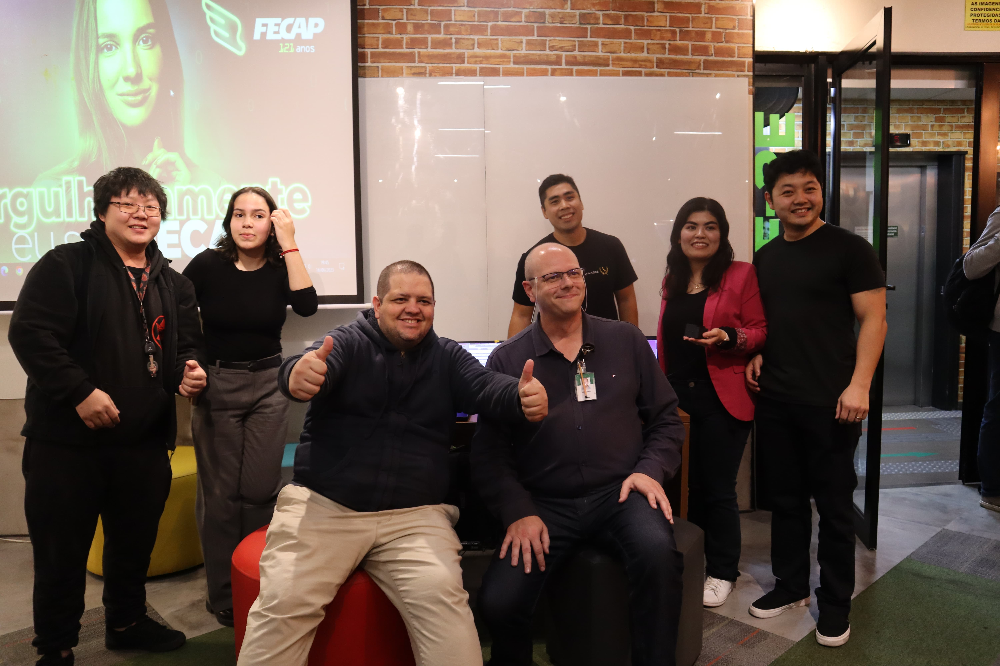

Minha História
Meu nome é Kevin Shiroma, nascido e criado em São Paulo.
Há muita coisa para se contar da minha vida, mas, no que se diz respeito à tecnologia, vou começar em 2020, bem quando começou a pandemia.
Nesse ano, estava fazendo faculdade de Economia na FECAP (Fundação Escola de Comércio Álvares Penteado), referência nos cursos voltado a negócios. Decidi por este curso porque eu amo investimentos e tudo relacionado, invisto desde meu primeiro salário e lembro como se fosse ontem a primeira vez que investi em uma renda fixa.
No entanto, com a pandemia, a situação financeira começou a ficar complicada, e meu pai, que é o provedor financeiro, contraiu o vírus, precisando ficar uma semana em casa pra se recuperar.
Bastou apenas uma semana para ver que as coisas não estavam bem. Isso me despertou uma preocupação muito grande, o que me fez cancelar o curso e tomei uma das maiores decisões da minha vida: Trabalhar no Japão.
Foi tudo tão rápido, em menos de um mês tirei meu visto e estava partindo.
 O dia que fui ao JapãoFiquei por longos 2 anos trabalhando e ajudando minha família. Estava ganhando muito bem, acima de R$10.000 todos os meses, mas não estava totalmente feliz.
Primeiro que eu estava longe de toda minha família e amigos. Eu trabalhava por 12h diárias em uma fábrica que eu mal conhecia pessoas. Minha vida se resumia a trabalho.
Segundo que não havia perspectiva de crescimento. Apenas se você sabe japonês é possível crescer, deixando de lado todas as suas habilidades interpessoais.
Então comecei a criar um plano de ação para voltar ao Brasil e fazer algo novo. Lembro muito bem no dia que peguei meu computador e comecei a pesquisar o que eu poderia fazer depois que eu voltasse.
Foi então que lembrei que eu fiz um curso de criação de sites em meados de 2008, quando ainda a internet estava crescendo e a internet na minha casa ainda era a discada.
Pensei em como estava o mercado de tecnologia e foi aí que conheci a minha primeira linguagem de programação: JavaScript.
Achei o máximo, fiquei impressionado como a teconologia deu um salto enorme desde a última vez que estive estudando. Estudei o mercado, as tecnologias, cursos que eu poderia fazer, consultei amigos e a cada dia ficava com mais vontade de entrar nesse mundo.
Foi então que voltei ao Brasil no final de 2022 e logo no início de 2023 iniciei meus estudos na própria FECAP em Análise e Desenvolvimento de Sistemas.
 Apresentação do projeto interdisciplinar: Internet das CoisasDesde então venho me aprimorando com estudos à parte da faculdade. A primeiro momento tinha me decidido tornar front-end, o que acabei fazendo uma certificação em UX Design e diversos cursos ligados ao front-end.
Porém, vendo que o mercado estava mais favorecido à área de dados eu migrei para me tornar um Analista de Dados, daí vem logo no início do site o motivo de eu possuir 3 habilidades na tecnologia: Desenvolvimento front-end, UX/UI Design e Análise de Dados .